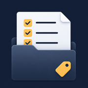
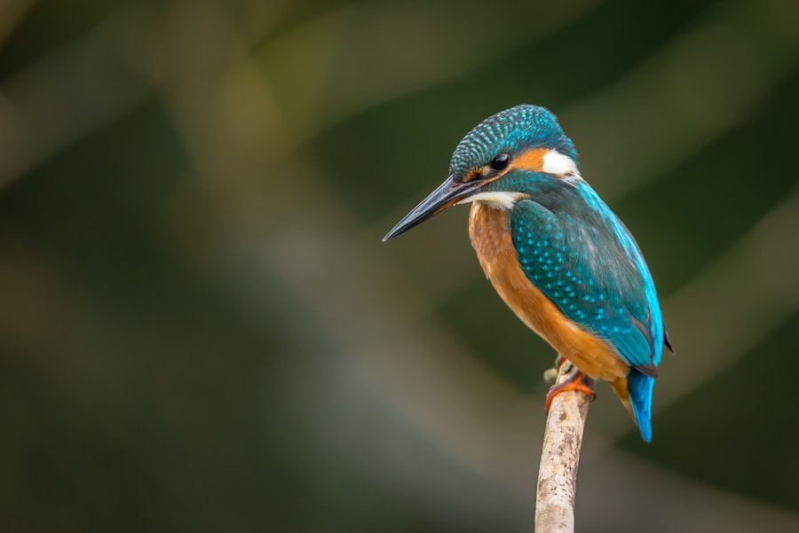
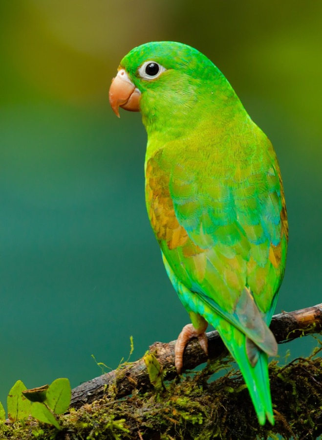

Images or rows
Open image folders, plain CSVs, or CSVs with an image path column and review each item in sequence.

DeckCheckLocal-first dataset triage
DeckCheck is a tiny source-available desktop app for turning folders of images and CSV rows into clean classified and annotated datasets, one focused pass at a time.
birds-2026.deckcheck

Question 1 of 1
Try it: press 1
This preview is live: number keys answer, arrow keys change the photo.
Built for one job
Open image folders, plain CSVs, or CSVs with an image path column and review each item in sequence.
Ask for objects in an image, choose a grid size, then click or drag across the cells that contain them.
Mix multiple-choice prompts with image annotation prompts, one or many per item.
Answer with 1–9, move with arrows, export with ⌘E. Mistakes are one keypress back.
Export source data, answers, selected image cells, and the selected cells' pixel bounds together.
Everything lives in one .deckcheck file. Stop mid-run, reopen later, carry on.
No platform ceremony
DeckCheck is for the small, sharp classification jobs that should not require servers, accounts, Docker, collaboration layers, or enterprise workflow. Open data, answer structured questions, mark image cells when you need visual labels, export the result as CSV.
For visual datasets
Add an image annotation question like "click every cell containing a bird", then mark the cells directly on the image. DeckCheck stores both the selected cells and their pixel bounds so the exported CSV is ready for downstream training data.

Free, source available
Releases ship with SHA-256 checksums. Or build it yourself: instructions on GitHub.